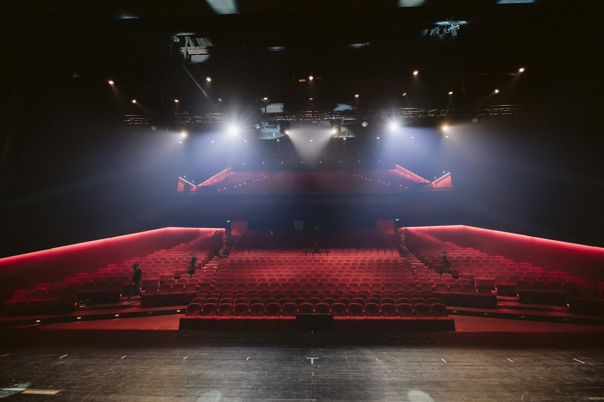
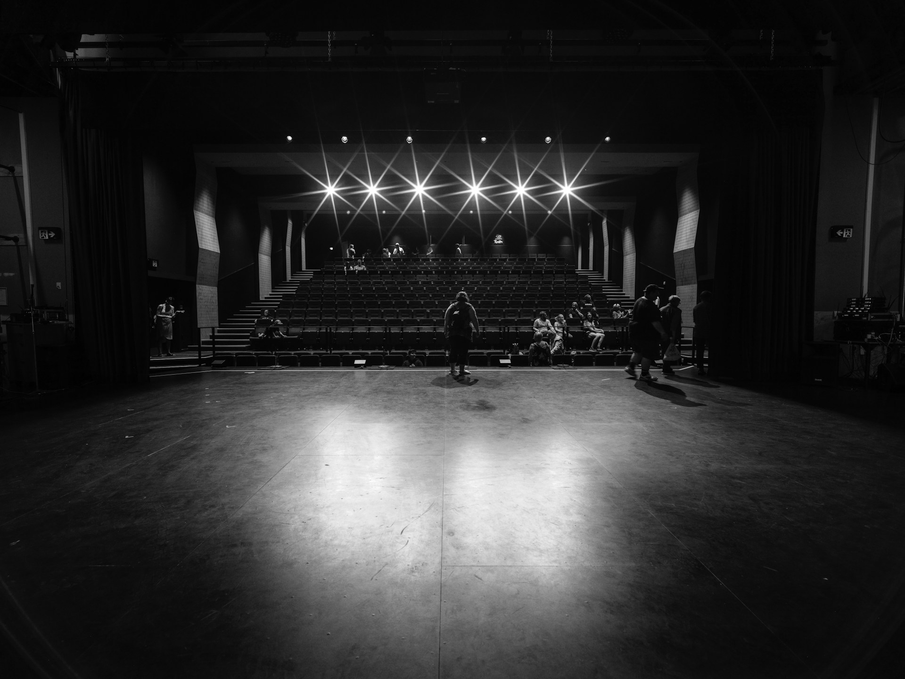
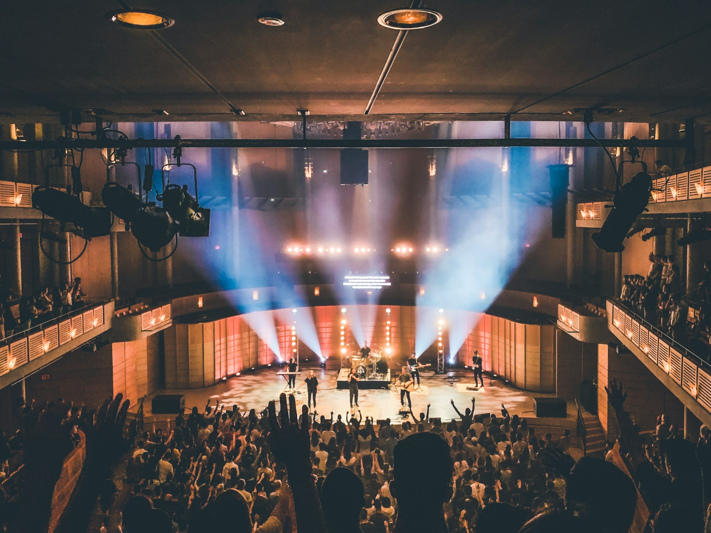
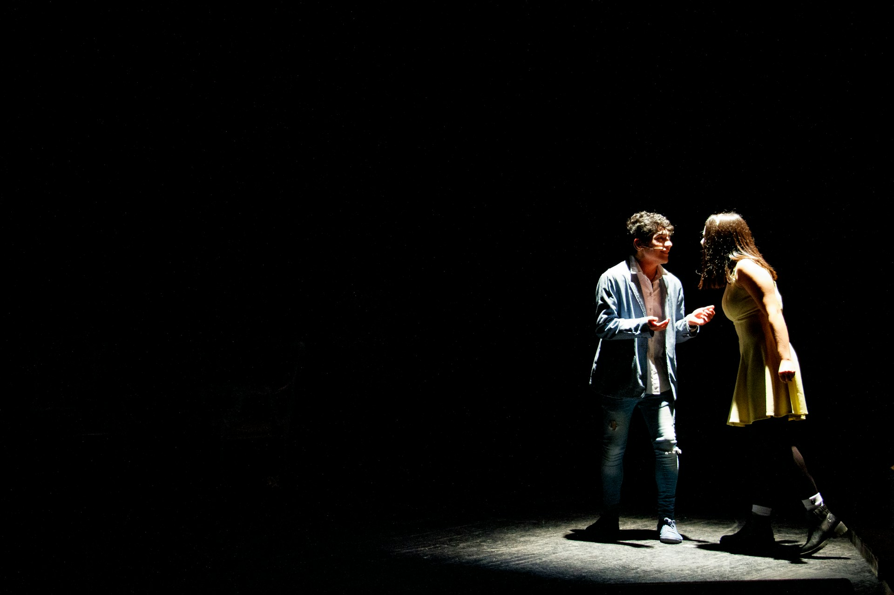
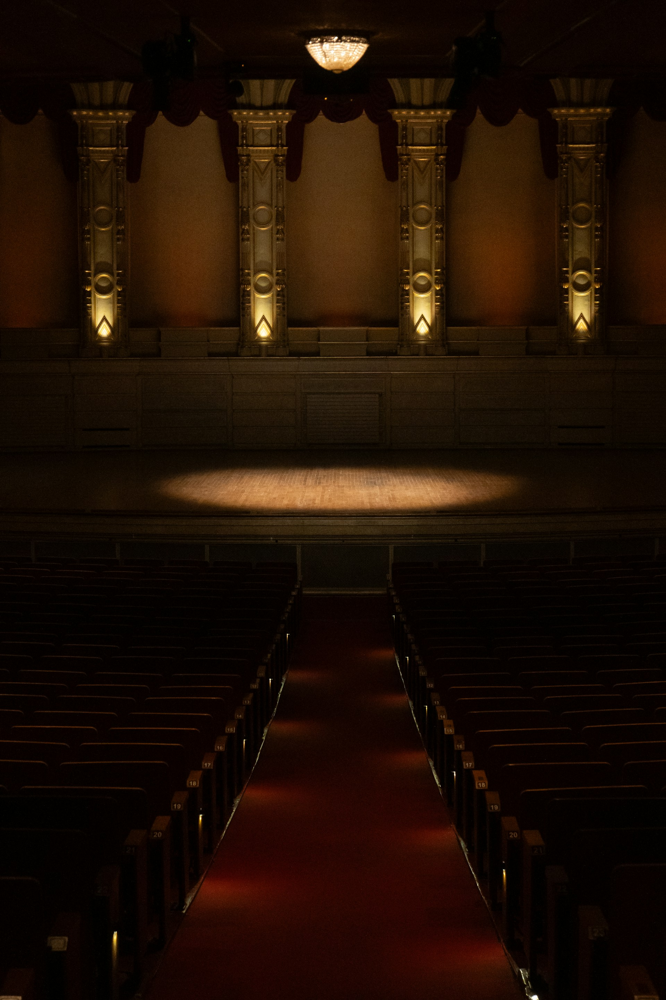

Театр одного актора був заснований з метою створення унікального камерного простору, де межа між глядачем та виконавцем стирається. Ми віримо, що монодрама — це найвищий ступінь акторської майстерності, що вимагає абсолютної віддачі, щирості та глибокого психологізму. Кожна вистава — це діалог душі актора з кожним глядачем у залі.

Наша сцена бачила десятки видатних постановок: від світової класики до сучасного авангарду. Ми постійно експериментуємо з форматами, залучаючи талановитих режисерів та сценографів, щоб візуальна мова доповнювала акторську гру. У наших стінах народжується справжнє мистецтво, вільне від зайвих декорацій, де головною цінністю залишається людина та її історія.



